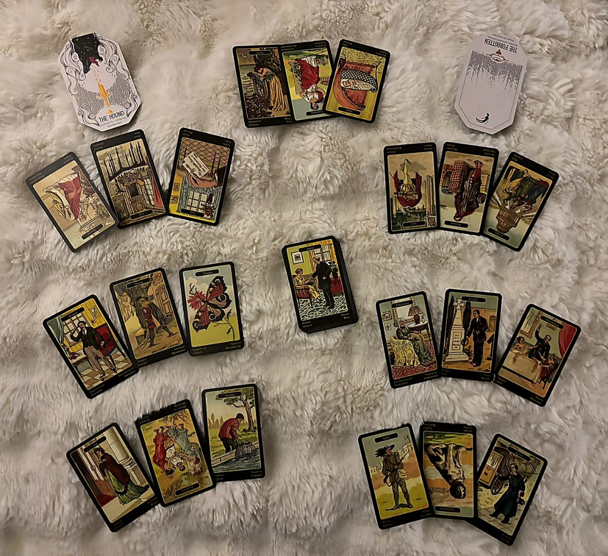
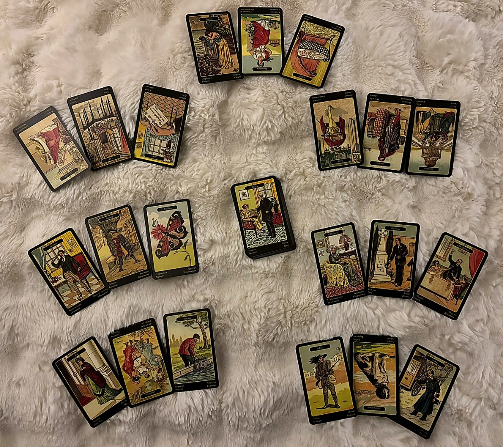

The Week Ahead — Sibilla della Zingara
april 6–12, 2026 · natalie's first sibilla reading · 7 positions × 3 cards + key influence
A Quick Orientation Before We Begin
The Sibilla della Zingara, or Gypsy Oracle, is a 52-card Italian system that reads like a novel. It's story-based, proximity-driven, and deeply concerned with people. You'll notice a lot of named figures here: the Lover, the Merchant, the Foe, the Old Woman. These aren't abstract archetypes the way the Citadel Oracle cards are. They're characters. Real people in your life, or the roles people are playing right now. When they show up, trust your gut about who they are. I'll describe them archetypally, and you place the faces.
Reversals matter in this deck, but they work differently than in tarot. A positive card reversed isn't cancelled, it's delayed or complicated. A negative card reversed is softened, passing through rather than settling in. And person cards reversed show the shadow side of whoever they represent: checked out, acting against your interests, or simply not present the way they should be.
I read each three-card group through three lenses: left to right as a surface narrative, the outer cards framing the center as the pivot, and then left-right pairs for cause and effect. The center card always carries the most weight. Let's walk through your week.
Something Tender Is Growing Through Grief
Sorrow + Constancy + Child
Left to right, the surface narrative: Sorrow (Dispiacere) opens the week with emotional weight, a grief or heaviness that's simply present. In Sibilla, Sorrow doesn't tell you where the grief came from or where it's going. It just says: this is here. Then Constancy (La Constanza) in the center, the pivot of the whole position, naming steadfastness, the will to hold through difficulty. And Child (Bambino) closing, something new, young, still forming, a beginning that hasn't declared itself yet.
Outer cards framing the center: Sorrow and Child are bracketing Constancy. The emotional weight on one side and the tender new thing on the other, and what holds them together is the commitment to endure. This isn't grim endurance. Constancy is a chosen quality, the decision to stay steady when the ground isn't fully stable yet.
Left-right pairs: Sorrow + Constancy reads as grief that has been held for long enough to become familiar, something you've been carrying with discipline rather than drowning in. Constancy + Child reads as that sustained effort producing something, a new phase, a small green shoot coming through.
The week's theme is not the sorrow itself. It's what the sorrow is making room for. Something new is emerging precisely because you've been steady enough to hold the heavy thing without dropping everything else.
All three cards are upright, which means this energy is arriving at full strength. Center-card dominance gives Constancy the most weight: the theme is the holding, not the hurting. Child as the last card in the sequence carries the most forward momentum, pointing toward what's next.
The Mind Clears, and Something Arrives
Thought + Gift + Letter
This is a beautifully coherent trio. Thought (Il Pensiero) opens, and I want to flag something immediately: Thought doesn't automatically mean your thoughts, Natalie. It represents ideas, plans, reflections circling in a situation. Could be yours. Could be someone else's thinking about you, about a shared situation, about what to do next. The position tells us this thinking is working in your favor this week.
Gift (Presente di pietre preziose) sits at center, the pivot. This is genuinely one of the best cards in Sibilla, an unexpected good thing arriving. Not something you had to earn or engineer. Something that simply shows up.
Letter (La Lettera) closes. Awaited news, communication, change arriving in written or concrete form.
Outer cards framing center: Thought and Letter bracket the Gift. So the thinking and the news are the container for something genuinely good landing. Someone's reflection or consideration of you leads to a communication, and in between those two, something of real value materializes.
Left-right pairs: Thought + Gift says the deliberation produces something generous. Gift + Letter says the good thing arrives as or alongside concrete news.
Expect a communication this week that carries more than it appears to on the surface. Someone has been thinking something through, and the result reaches you in a form you can hold.
All three upright in Positive Influences means the support is arriving at full strength, unblocked. Gift at center is about as clean a positive signal as this deck gives. Letter closing means the support likely takes a concrete, tangible form: an email, a message, a document, an offer.
Three Contracts Walking Into a Room
Lover + Merchant + Wedding
Here's where it gets interesting, and where Sibilla's person-card system earns its keep. We have two person cards and a situation card, all upright, sitting in the Negative Influences position.
Lover (L'Amante) is a man, roughly 30 to 45, romantically significant or at least emotionally charged. Upright, he's warm and present, but his presence in the friction position tells us something about him is causing friction this week, not because he's behaving badly per se, but because what he represents is complicating something.
Merchant (Mercante) at center is the pivot: a man in a business or practical role, career dealings, financial arrangements. This is the heart of the friction. The difficulty is practical, transactional, work-related.
Wedding (Imeneo) closes. Not necessarily a literal wedding. In Sibilla, Wedding is about union, commitment, formal agreements, contracts.
Outer cards framing center: the Lover and the Wedding bracket the Merchant. A personal/emotional figure and a commitment are flanking the business dealing. This reads as a situation where personal ties and formal obligations are both pressing on a practical arrangement, making it harder to handle on purely rational terms.
Left-right pairs: Lover + Merchant suggests the man and the business matter are connected, maybe the same person wearing two hats, maybe two different men whose interests overlap. Merchant + Wedding says the business dealing involves or leads to a binding agreement.
The friction this week isn't hostile. It's structural. Something involving a man and a commitment or contract is creating pressure because the personal and the practical are tangled together.
All three upright in Negative Influences means the friction is at full force, not softened. But notably, none of these are inherently hostile cards. This isn't Enemy or Falseness territory. The difficulty comes from the complexity of the arrangement, not from malice. Merchant at center as the pivot tells us: follow the practical thread. That's where the knot is.
Jealousy Makes Noise, Then Fizzles
Despair + Enemy + Frivolity
This looks alarming at first glance. Let me walk you through why it's actually less severe than it appears, because Sibilla has a built-in mechanism here.
Despair (Disparato per gelosia) opens, and the full Italian name is the key: desperate due to jealousy. This is not generalized despair. This is specifically jealousy-driven crisis energy, someone feeling overlooked, outpaced, or wounded in their ego. Enemy (Il Nemico) sits at center, the pivot: a male adversary acting directly or indirectly, representing falsehood and obstruction. And Frivolity (La Leggerezza) closes.
Now here's the critical mechanism: Frivolity diminishes the intensity of surrounding cards whenever it appears in a group. This is a named rule in the Sibilla system. So the Despair and the Enemy are both reduced in force. The jealousy-driven energy and the male adversary's action carry less weight than they would otherwise. Frivolity says the impulse behind this is careless, impulsive, not deeply calculated.
Outer cards framing center: Despair and Frivolity bracket the Enemy. The jealousy and the recklessness are the atmosphere around this adversarial figure, which means his action comes from wounded ego and carelessness, not from strategic malice.
Left-right pairs: Despair + Enemy says the jealousy belongs to or motivates the adversary. Enemy + Frivolity says his move is lightweight, poorly thought through, not the kind of thing that sticks.
Someone may act out of jealousy this week, a man whose ego has been bruised. It will feel surprising when it surfaces. But the energy behind it is impulsive and thin. It makes noise, not damage.
Frivolity's special property is the engine of this position. Without it, Despair + Enemy in A Surprise would be genuinely disruptive. With Frivolity closing and diminishing the group, this becomes a flare-up rather than a crisis. All upright, so it does land directly, but the force is blunted by the carelessness of its own execution.
The Elders in the Room
Old Woman + Widower + Cheerfulness
Two person cards flanking a situation card, and both are from the deck's elder tier. Old Woman (La Vecchia Signora) is a female figure 60 or older, representing established patterns, long-standing situations, things that resist change. She has deep roots. Widower (Il Vedovo) is a male figure 60 or older, marked by loss and grief, emotionally solitary, rarely asks for what he needs. Between them sits Cheerfulness (L'Allegria): social life, celebration, the energy of a positive communal event.
The challenge position asks what the week demands of you for growth. And what I see here is two older figures, both carrying weight in their own way, the woman through stubbornness and the man through grief, and the lesson sitting between them is about bringing lightness into heavy rooms.
Outer cards framing center: Old Woman and Widower bracket Cheerfulness. The established, resistant, grief-laden energies are on the outside, and the social warmth is the pivot, the thing you're being asked to find or bring. This isn't about ignoring the weight of these figures. It's about not letting their gravity consume the whole atmosphere.
Left-right pairs: Old Woman + Cheerfulness says the challenge involves bringing warmth or celebration into a situation or relationship that has calcified. Widower + Cheerfulness says someone who carries grief needs more lightness than they'll ask for.
The lesson this week: you may be standing between two forms of heaviness, one that refuses to change and one that refuses to ask for help. Your growth edge is finding the warmth in the middle without being crushed by either side.
Both person cards are upright, meaning these figures are showing their characteristic faces fully: the Old Woman is entrenched, the Widower is withdrawn. Cheerfulness upright at center means the social/communal energy is genuinely available, not blocked. The challenge isn't that joy is absent. It's that it has to be actively carried into spaces that don't generate it on their own.
Name the Adversary, Choose the Joy, Let the Good Arrive
Foe + Joyfulness + Surprise
Another person card opening an important position. Foe (La Nemica) is a female adversary, distinct from Enemy in Position 4. She acts with intent and may perform warmth she doesn't feel. Upright, she's someone acting directly rather than at a distance. At center, the pivot: Joyfulness (Allegrezza al cuore), which is specifically joy to the heart, personal and internal, more intimate than social Cheerfulness. And closing, Surprise (Consolante sorpresa), an unexpected pleasant event that arrives and helps.
This is advice, so the deck is telling you what to do.
Outer cards framing center: the Foe and the Surprise bracket Joyfulness. The adversarial female figure and the unexpected good thing are both flanking your personal heart-joy. This says: the advice is to protect your inner peace. Someone may try to unsettle it, and something unexpected may delight it, but the center has to hold either way.
Left-right pairs: Foe + Joyfulness is striking. It says, be aware of the woman who isn't genuinely warm, but don't let awareness of her compromise your joy. This isn't about naivety. It's about not giving her your emotional center. Joyfulness + Surprise says that when you stay in your heart, the pleasant surprise has room to land.
See the Foe clearly. Don't perform peace you don't feel in her direction, but don't let her steal what's genuinely yours either. Heartfelt joy is the strategy this week, and something good is coming to meet it.
Note that Position 4 gave us Enemy (male adversary, jealousy-driven, impulsive) and Position 6 gives us Foe (female adversary, intentional, performing warmth). These are different people, Natalie. Sibilla insists on that distinction. The male figure is reactive and careless. The female figure is deliberate but can be named and navigated. The advice names her so you can.
Duty Held Together by Loyalty
Soldier + Faithfulness + Service
This is the landing pad for the whole week, and it's remarkably coherent. Soldier (Militare) opens: discipline, physical and emotional strength, the uphill battle that requires force. Can represent a literal person in uniform or authority, or the energy of showing up like one. Faithfulness (La Fedelta) is the center pivot: loyalty, honesty, the bond between people, success in love. More personal than Constancy (which appeared in your Theme), Faithfulness names the loyalty between specific individuals. And Service (Domestico) closes: duty, showing up for others, the work of caretaking, active fulfillment of obligation.
Left to right, the narrative: disciplined strength leads to deepened bonds, which express themselves through devoted action. This is a week that resolves through doing the thing, showing up, holding the line, being of genuine use.
Outer cards framing center: Soldier and Service bracket Faithfulness. The discipline and the duty are both serving the bond. Everything this week, the sorrow, the surprise, the adversaries, the elders, funnels into a question of loyalty enacted through work.
Left-right pairs: Soldier + Faithfulness says the strength required this week is specifically in service of a bond or commitment. Faithfulness + Service says that loyalty this week looks like action, not words.
The week lands in a posture of devoted discipline. Whatever else happens around the edges, the through-line is: show up faithfully, do the work, and the bond holds.
All three upright in Synthesis means the week resolves cleanly. No blockage, no delay, no shadow on the landing. Faithfulness at center as the pivot is about as grounding a synthesis card as this deck offers. And notice the echo: Position 1's center was Constancy (the will to hold), Position 7's center is Faithfulness (the loyalty that holds). The week opens and closes on the same note, deepened by what happens between.
The Doctor at the Bottom of the Deck
Doctor (Dottore)
The Key Influence is the card at the bottom of the deck after all positions are drawn. It's the hidden driver speaking beneath the entire reading. And yours is the Doctor: professional authority, someone who diagnoses clearly and knows what's needed, competent, trustworthy, calm under pressure.
This reframes everything. Beneath all the sorrow and constancy, the adversaries and the loyalty, the elders and the surprises, there is a figure who sees the situation clearly and knows the prescription. The Doctor isn't scrambling. He isn't emotional about it. He looks at the problem, identifies what it is, and names what needs to happen.
This could be a literal person, someone with professional authority or medical/therapeutic expertise who is quietly influencing the shape of the week. Or it could be the energy you're being asked to channel: the calm, diagnostic clarity that sees through noise to the actual condition underneath.
The hidden driver of your week is clear-eyed competence. Whatever lands, whatever flares up, whatever asks you to hold it, the Doctor beneath the deck says: you know what this is, and you know what it needs.
Doctor upright as Key Influence is straightforward: the diagnosis is good, the advice is sound, the authority is earned. If it had been reversed, we'd be looking at misguided counsel or wrong diagnosis running underneath everything. Upright, it's a stabilizing force. It also resonates with the Soldier-Faithfulness-Service synthesis: competent, disciplined care.

Synthesis — Sibilla & Citadel Oracle
weaving the full reading · the week's architecture · what to carry forward
The Hound and the Forgotten
Energy to Cultivate: The Hound — loyal pursuit, persistence on the trail. Understand / Manage: The Forgotten ↓ (Reversed) — wallowing in being unseen.
The Hound upright is the energy of staying on the scent. Not frantic chasing, not obsessive hunting, but the particular persistence of an animal who has caught the trail and simply will not lose it. This is your cultivating energy for the week, and it maps perfectly onto what the Sibilla showed. Constancy as your theme, Faithfulness as your synthesis, Soldier and Service as the week's resolution. The Hound says: keep going. Don't second-guess the trail. You've found the right one.
The Forgotten reversed is more delicate. Upright, the Forgotten asks you to honor what was left behind, to reclaim what's been overlooked. Reversed, it flags the shadow of wallowing in being unseen, the tendency to sink into the feeling that your contributions, your presence, your work aren't being noticed or valued. The Citadel is saying: this is in the air this week. Understand it. Manage it. Don't let it drive you.
And look at how precisely that maps. Position 4 gave you Despair (jealousy-driven crisis) and Enemy (a male adversary acting from wounded ego). Position 5 placed you between the Old Woman and the Widower, two figures who carry their own heavy histories. The Forgotten reversed is the emotional undertow beneath all of that: the fear of going unseen, of doing the work without recognition, of holding everything steady while someone else makes noise about their own wounds.
The Hound says: stay on the trail. The Forgotten reversed says: the temptation to feel invisible is real, but it's a shadow, not the truth.
The Architecture of a Devoted Week
Let me show you the shape of this week as a single story, because it has one.
You begin in grief that has been held long enough to become productive. The Sorrow-Constancy-Child theme isn't about suffering. It's about what steady endurance has been quietly growing beneath the surface. Something new is forming, and it's forming because you've been willing to carry the heavy thing without collapsing under it.
Support arrives concretely. Thought-Gift-Letter in your Positive Influences is one of the cleanest signals this deck gives: someone's careful consideration of you produces something genuinely good, and it reaches you in tangible form. An email, a message, an offer, a document. Watch for it. It's real.
The friction isn't hostile but it is structural. Lover-Merchant-Wedding in Negative Influences describes a situation where personal feeling and practical obligation are knotted together around a binding arrangement. There's a man (or two men, or one man wearing two hats) at the center of a commitment that can't be handled on purely emotional or purely practical terms. It needs both, and that's what makes it difficult.
Two adversaries surface, and they're different people with different energies. The Enemy in Position 4 is a man acting from jealousy, impulsively, and Frivolity strips his move of real force. He makes noise. The Foe in Position 6 is a woman who performs warmth she doesn't feel, and the advice is to see her clearly without giving her your center. These aren't the same threat. One is careless and the other is deliberate, but neither one is bigger than what you're carrying.
The week asks you to hold space between two kinds of heaviness. The Old Woman who won't change and the Widower who won't ask for help are real figures or real dynamics, and your growth edge is finding the Cheerfulness between them without pretending the weight isn't there. This is not about toxic positivity. It's about the discipline of warmth.
And it all resolves through devotion. Soldier-Faithfulness-Service as your synthesis is almost martial in its clarity: show up, stay loyal, do the work. This isn't a week that asks you to be clever or lucky or strategic. It asks you to be faithful. And beneath it all, the Doctor as your hidden driver says you already know what's needed. The diagnosis is clear. Trust it.
The Hound reinforces the through-line. Stay on the trail. The scent is right. Don't lose it to distraction or noise or the adversaries' drama. And when The Forgotten reversed whispers that no one sees what you're doing, that the holding and the steadiness and the showing up are invisible, remember: that's the shadow talking. The synthesis cards, all upright, every one of them naming loyalty and duty and strength, say the work is landing exactly where it needs to.
This is a week built on the architecture of devotion. The sorrow is real. The adversaries are real. The elders and their weight are real. But the trail you're on is right, the news arriving is good, and the faithfulness at the center of everything is not wasted. Show up like the Soldier. Serve like the Doctor diagnoses: calmly, clearly, knowing what's needed. The new thing growing beneath the grief will keep growing.
The structural echo between Position 1 (Constancy as center) and Position 7 (Faithfulness as center) is the spine of this reading. Both name the quality of holding, but Constancy is the will and Faithfulness is the bond. The week opens asking if you can endure, and closes showing that the endurance deepens the connection. The Hound in Citadel maps directly onto this arc: persistence as a virtue, loyalty as a practice. The Forgotten reversed names the specific emotional risk of that practice — the feeling of being unseen while doing invisible, essential work. The Doctor beneath the deck answers it: someone sees clearly. The diagnosis holds. Trust the prescription.